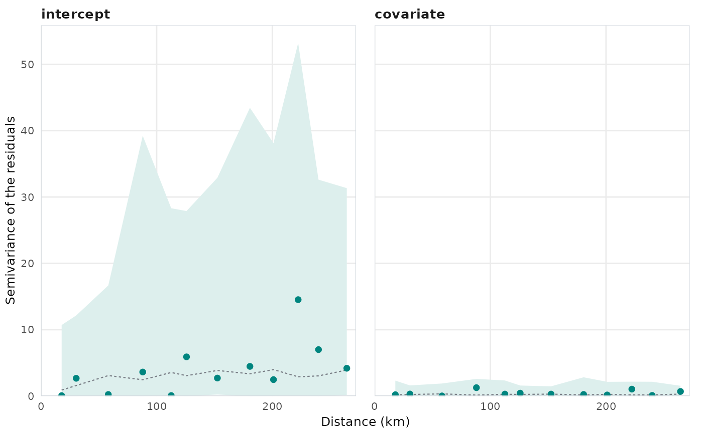
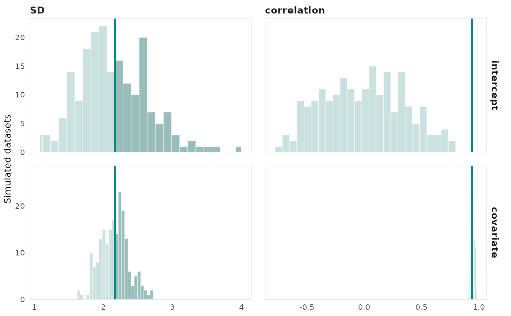

Checks whether a fitted model could have produced the data. Datasets are simulated from the model at the observed locations, and features of the simulated datasets are compared with the same features of the observed one. The features are
statistics of a dataset, such as the standard deviation of the prevalence or the proportion of zero counts,
the distribution of the prevalence, the rate or the response,
the variogram of the residuals from the covariates, which shows whether the model describes the spatial correlation that they leave.
All of them are compared by default, and statistics says which.
Usage
assess_fit(
models,
statistics = NULL,
breaks = NULL,
nsim = 1000,
seed = NULL,
return_simulations = FALSE,
messages = getOption("RiskMap.messages", TRUE)
)Arguments
- models
A fit from
glgpm(), or a list of fits to the same data. The names of the list name the models in the results.- statistics
What to compare, the names of statistics, among
"mean","sd","min","max","zeros","distribution"and"variogram", a function that takes a dataset, assimulated_data()returns it, and gives named numbers, or a list of names and functions. The default,NULL, is numbers that depend on the family (see Details), the distribution and the variogram.- breaks
Optional breakpoints of the distance classes of the variogram, in the distance units of the (first) model, as in
variogram(), whose default is used otherwise, 14 classes of equal width up to a third of the largest distance between locations. An error ifstatisticsdoesn't include the variogram.- nsim
Number of datasets simulated from each model, at least 19. Defaults to 1,000.
- seed
Optional non-negative integer seed. When supplied, the caller's random-number state is restored on exit. All models are simulated with the same seed, so that their surfaces share random numbers.
- return_simulations
Logical, whether the result holds the simulations of each model, from
simulate_glgpm(). Defaults toFALSE.- messages
Logical, whether to show a progress bar, as described in riskmap_progress. Defaults to the option
RiskMap.messages, orTRUEif it is not set.
Value
A list of class RiskMap_predictive_check, containing
- observed
A data frame with the observed
valueof eachstatisticthat is a number for eachmodel.- simulated
A data frame with the
valueof eachstatisticin eachsimulationfrom eachmodel.- distribution
A data frame with the distribution function of the observed data for each
model, at the valuesvalue, themedianof those of the simulated datasets, the limits of the joint envelope,lowerandupper, and whether the observed one isoutsideit.NULLif not instatistics.- variogram
A data frame with the same columns for the semivariance of the residuals in each distance class, the mean
distanceof its pairs of locations and their number,n_pairs.NULLif not instatisticsor when no pair of locations is in a class, and without the models whose covariates leave no residuals.- nsim, seed, breaks, distance_units, level
The settings.
levelis the coverage of the joint envelopes, 0.95.- family, response, quantity, unit
The family of each model, the response of the formula, the quantity whose distribution is calculated,
"prevalence","rate"or"response", and whether each value of it is that of an"observation"or of a"location".- n_locations, n_observations
The numbers of locations and of observations.
- simulations
The simulations of each model, a named list of results of
simulate_glgpm(), ifreturn_simulations = TRUE.
The simulated datasets
Each dataset has a new surface, new values of the nugget and the random
effects, and new responses at the observed locations, with the observed
covariates, offsets and denominators. The parameters stay at their
estimates. simulate_glgpm() simulates them.
The surface is simulated again, and not predicted from the data, so that the model must reproduce a feature through its structure. A surface that is conditioned on the data has adapted to them. Datasets simulated from it resemble the observed one more than the model itself does, so a check of them can miss what is wrong with the model.
Statistics
The numbers with a name are the mean, the standard deviation, the minimum
and the maximum of the empirical prevalence, the rate or the Gaussian
response, and the proportion of zeros. The default ones are "mean", "sd"
and "zeros", and for Gaussian models "mean", "sd", "min" and "max".
In the result the names say what the statistic is of, such as
sd_prevalence.
These numbers are those of the observations. The exception is a binomial model whose denominators are all 1, because the prevalence of a single individual is only 0 or 1. The positives and the denominators are then added up at each location, and the numbers are those of the locations. With other denominators the observations are not added up, because that would hide the variation between those at the same location.
A function can calculate anything from a dataset, such as a correlation with a covariate, and can return a vector of named numbers, a list of them or a data frame with one row. The names of a list are those of its statistics, so that a function in it that returns one number has the name that it has in the list. Simulated datasets in which a statistic isn't finite are left out of its summary, with a warning.
Distribution and variogram
These are curves and not numbers, and each has a plot of its own. They are
calculated by default, and with a given statistics only if they are in it.
The distribution is that of the same values as the numbers with a name, the prevalence, the rate or the response of each observation, or the prevalence of each location when the denominators of a binomial model are all 1.
The variogram is that of the residuals from the covariates. The response is first transformed, to the empirical logit for binomial models and to the logarithm of the rate with 0.5 added to the count for models of counts, whatever their link. The response of Gaussian models is not transformed. There is one value for each location, where the observations are added up, or averaged for Gaussian models. The residuals are the differences between these values, less any offset, and their least squares fit on the covariates of the model. An offset under a link other than the canonical one is one of the covariates of this fit. The regression is done again for each simulated dataset. The variogram of the values themselves would be dominated by a strong trend, which the covariates explain, and would show little of the spatial correlation. Each model has its own residuals and so its own observed variogram.
The joint envelope is drawn as in variogram(), from the observed and the
simulated curves ordered by their extreme rank lengths, at a level of 95%.
With the parameters at their true values, the whole observed curve is inside
it with a probability of at least 95%.
What a check can tell
A feature far outside what the model simulates is one that the model misses. The features that tell most are those that the model has no parameter for. A feature that the model was fitted to, such as the mean, can hardly fail, whatever is wrong with the rest of the model.
A model that passes is not shown to be right. The parameters are estimated from the same data, so the simulated datasets are centred near the observed one, and the check is conservative. A correct model is outside an envelope less often than 5% of the time. With few locations, or when the spatial correlation extends over much of the study area, datasets simulated from the same model differ a lot from each other, and the check has little power.
The edge of an envelope depends on the simulations, so that another seed
moves it, and a single point near the edge, on either side of it, says
little. The first distance classes often have few pairs, so a single point
outside the envelope there needs care.
Nothing here is a p-value or a mark that a model passes or fails. An observed statistic is unusual for the model when it is outside the interval that holds 95% of the simulated ones. The proportion of simulated values at or above the observed one says where it lies among them. It says little when many simulated values are equal to the observed one. When the data have no zeros, for example, the proportion of zeros of every simulated dataset is at or above theirs, also for a model that seldom gives any.
See also
plot_predictive_check(), which plot() of the result also calls,
summary(), to_table(), and
simulate_glgpm() for the simulations. assessment says which function
answers which question about a model.
Examples
data(italy_sim)
example_data <- italy_sim[1:100, ]
models <- list(
intercept = glgpm(y ~ gp(), data = example_data, family = "gaussian",
messages = FALSE),
covariate = glgpm(y ~ log(pop_dens) + gp(), data = example_data,
family = "gaussian", messages = FALSE)
)
result <- assess_fit(models, nsim = 199, seed = 1)
summary(result)
#> ── Simulated and observed data ─────────────────────────────────────────────────
#> Mean
#> Model Observed Median 95% interval At or above
#> intercept 9.477 9.215 7.771 to 10.991 39.7%
#> covariate 9.477 9.468 9.117 to 9.830 48.2%
#>
#> SD
#> Model Observed Median 95% interval At or above
#> intercept 2.168 2.057 1.220 to 3.254 43.7%
#> covariate 2.168 2.163 1.808 to 2.588 49.2%
#>
#> Minimum
#> Model Observed Median 95% interval At or above
#> intercept 4.364 5.154 2.092 to 7.653 67.8%
#> covariate 4.364 5.187 3.797 to 6.395 87.4%
#>
#> Maximum
#> Model Observed Median 95% interval At or above
#> intercept 12.923 13.233 11.294 to 16.348 61.3%
#> covariate 12.923 12.884 11.977 to 13.936 46.7%
#>
#> ℹ At or above is the percentage of simulated values that are equal to the
#> observed one or above it. An observed value outside the 95% interval is
#> unusual for the model, and 50% is not a target.
#> ℹ The observed variogram of the residuals is outside the 95% joint envelope in
#> 0 (intercept) and 0 (covariate) of 12 distance classes.
#> ℹ The observed distribution is inside the 95% joint envelope.
plot_predictive_check(result, type = "variogram")

# Numbers by name, one of one's own, and the variogram
describe <- function(data) {
c(correlation = cor(data$y, log(data$pop_dens)))
}
result <- assess_fit(models, list("sd", describe, "variogram"), nsim = 199,
seed = 1)
plot_predictive_check(result)
